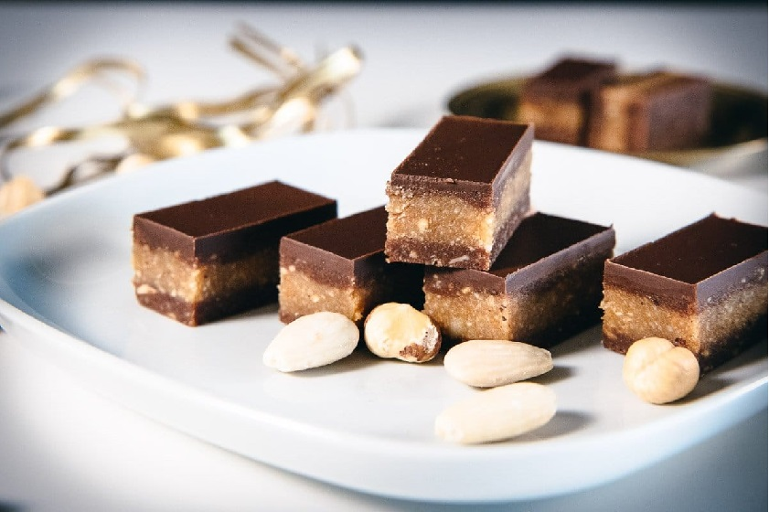

Bajadera recipe

Description
Homemade praline nougat
Ingredients
- 1/2 whole orange (juice)
- 100g of powdered sugar
- 100g of butter
- 60g of ground hazelnuts
- 40g of ground, peeled almonds
- 100g ground biscuit (Plazma preferred)
Dressing
- 40 grams of chocolate
- 20 grams of butter
- A little bit of oil
- Melt and pour over the Bajadera
Steps
-
Mix together until it becomes a smooth mixture: sugar, butter, hazelnuts, almonds, biscuit
and orange juice.
- Spread the mixture on foil in a tray and cover both sides with chocolate
- Put in the fridge until it hardens and serve